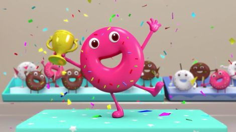
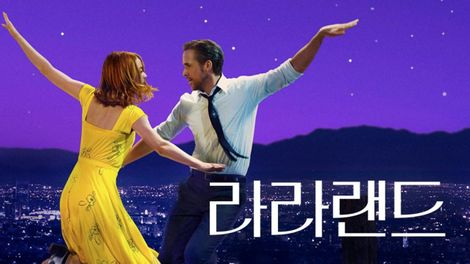
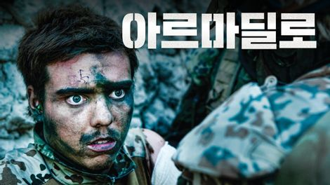

먹스터디
15세, 2시간 45분
8월 28일, 그날이 왔다. 명목상 프로젝트때문에 모였지만, 정작 만나서 온갖 종류의 산해진미를 먹기 시작한다. 그들이 먹은 음식만 나열해도 수십가지, 그 중 그들이 꼽은 최고의 음식을 소개한다.
- 감독
- 박태준
비슷한 작품
-
 서프라이즈 팝콘
17세 . 11시간 37분
평화로운 토요일, 호야와 쓰리박은 수상한 팝콘을 사게된다. 놀랍게도 그들이 산 팝콘은 2등 상품을 가지고 있었는데... 이 쿠폰을 가지기 위해 치열한 경쟁을 시작하게 된다...!
-
라스트 풀 메져
15세 • 1시간 56분
대규모의 미군 사상자를 낸 애블린 전투에서 전우들을 위해 희생한 공군 항공대원 피츠. 32년 후, 피츠에게 명예 훈장을 수여하기 위해 조사하던 변호사 스콧 허프만은 국가의 은폐된 진실을 알게 된다.
-
 라라랜드
12세 • 2시간 7분
재즈의 부활을 꿈꾸는 피아니스트 세바스찬과 성공을 꿈꾸는 배우 지망생 미아. 인생에서 가장 빛나는 순간 만난 두 사람은 미완성인 서로의 무대를 함께 만들어가기 시작한다.
-
 아르마딜로
15세 . 1시간 48분
아프가니스탄 최전선 아르마딜로 캠프에 파병된 덴마크 청년들은 설렘과 두려움으로 6개월간의 복무를 시작한다.
갓챠 사용자 평
호야와 쓰리박
이 영화를 보고 육회가 두려워졌다.
패캠
그저 경이롭다. 이렇게 직접 현장에 있듯 100% 실감나는 영화가 있었나싶고, 엄청난 퀘스트를 이루어야하는 상황에서 음식을 포기하지않는 그 열정을 너무도 잘 그려냈다. 영화의 발전이 정말 눈부시다 느꼈다. 배경도 음식도 마지막 씬까지 그저 정말 경이로울 뿐이다. 영화를 사랑할 수 밖에 없게 만드는 영화는 이런 영화겠지.
살려줘
육회초밥에 의한, 육회초밥을 위한
DTD
모든것을 앗아간 음식이 모든것을 되돌려줬다. 그리고 말한다.슬픔도 절망도 희망도 돌아보면 진주같은 음식이었다는것을. 망할 평론가들은 개나줘버리고 빵이나 먹으러 가자!